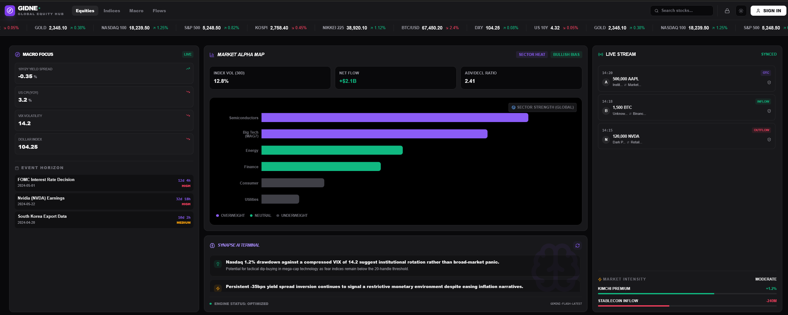

Gidne: 투자 내비게이션
"복잡한 데이터의 숲에서 수익으로 가는 길을 제시하다"

Bento Grid 기반 고성능 대시보드 UI 예시
2. 제품 설계 철학 (Core Logic)
📈 상대 강도(RS) 로직에 기반한 의사결정
단순 가격 변동은 시장의 소음(Noise)일 뿐입니다. 특히 레버리지 트레이딩 환경에서는 시장의 중력을 이겨내는 '상대적 강세'만이 실질적인 수익의 지표가 됩니다.
RS 공식: RS Spread = Ticker %Δ - Index %Δ
지수 대비 초과 수익을 내는 '진짜 대장주'를 실시간으로 필터링하여 리스크는 줄이고 수익률은 극대화합니다.
3. 정보 시냅스 체계 (Data Architecture)
🇺🇸 Section 1: Macro & Global Equity
| 항목 | 세부 데이터 | 수집 방식 | 시냅스 로직 및 선택 이유 |
|---|---|---|---|
| 시장 지수 | 나스닥 100, S&P 500, 코스피 | Websocket | [심장] RS 계산의 기준 분모 |
| 금리 | 미 국채 10Y, 2Y, Spread | REST | 금리 발작 및 장단기 역전 해소 감지 |
| 통화/환율 | DXY, USD/KRW | Websocket | 위험 자산 압박 및 외인 수급 추적 |
| 물가 지표 | US CPI (YoY) | REST | 장기 인플레이션 추세 확인 |
₿ Section 2: Event Horizon & Alpha Metrics
| 항목 | 세부 데이터 | 수집 방식 | 시냅스 로직 및 선택 이유 |
|---|---|---|---|
| 경제 일정 | FOMC 금리 결정, CPI 발표일 | REST (Webhook) | 발표 직전 카운트다운 및 변동성 대응 |
| 선행 지표 | 한국 수출 데이터 (KCS) | REST (Monthly) | 글로벌 경기 및 반도체 업항 선행 시그널 |
| 온체인 강도 | 김치 프리미엄, 스테이블 유입 | REST / Custom | 시장 내 대기 자금 및 투심 과열 측정 |
| 청산/고래 | 실시간 청산액, Whale Alert | Websocket | 지지/저항 파악 및 물량 투하 감지 |
💧 Section 3: Liquidity & System Logic
순유동성 (Net Liquidity)
WALCL - (WTREGEN + RRPONTSYD)
연준 자산에서 TGA, 역레포를 차감하여 실질 현금 흐름 추정
변동성 괴리
MOVE Index vs VIX 분석을 통해 채권/주식 시장 온도차 분석
4. 기술적 차별점
Websocket First
시세 지연은 곧 손실입니다. REST API가 아닌 Websocket Stream 방식을 우선하여 실시간 데이터를 지향합니다.
Data Synergy
거시 경제, 실시간 시세, 온체인 데이터를 하나의 시냅스로 연결하여 통합 인사이트를 제공합니다.
5. 타겟 유저 및 페르소나
"시간 부족한 스마트 개미"
- • 25-40세, 직장인 또는 대학원생
- • 퇴근 후 30분 안에 시장 상황 파악 및 포지션 결정
- • Goal: 효율적인 의사결정 경로 확보
"풀타임 트레이더"
- • 30-50세, 전업 투자자
- • 데이터 간의 '맥락' 연결에 갈증을 느낌
- • Goal: 매크로 변화의 크립토 전이 선제 포착
6. 문제 정의 (Problem Statement)
🔴 현재 투자자가 겪는 핵심 문제
정보 파편화
여러 플랫폼에 흩어진 데이터
맥락 부재
자산 간 연결성 파악의 어려움
시간 비용
정보 종합에 하루 1-2시간 소요
"Gidne는 하나의 화면에서 실시간으로 맥락을 연결합니다."
7. 경쟁 분석 (Competitive Analysis)
| 서비스 | 강점 / 약점 | Gidne 차별점 |
|---|---|---|
| TradingView | 분석 최강 / 매크로 통합 부족 | 매크로-크립토 시냅스 연결 |
| Coinglass | 크립토 데이터 표준 / UI 노후화 | 주식/매크로 통합 + 모던 UI |
| Investing.com | 경제 캘린더 / 광고 과다, 복잡함 | 클린 UI, 핵심 이벤트 집중 |
8. 성공 지표 (Success Metrics)
North Star Metric
"사용자당 주간 의사결정 횟수"
Gidne를 보고 실제 매매 결정을 내린 유의미한 행동 (목표: 주 5회 이상)
DAU 목표
1,000명+
런칭 3개월 내
알림 CTR
20% 이상
시냅스 알림 효율
9. MVP 스코프 및 우선순위
Global Ticker
상단 실시간 시세 스트림, 즉각적 가치 전달
Macro Compass
금리/VIX/DXY 등 핵심 매크로 지표 통합
Crypto Alpha Map
BTC OI/FR/청산맵 등 타겟 유저 핵심 니즈
Event Horizon
FOMC/CPI 주요 일정 카운트다운
10. 리스크 및 완화 전략 (Risks)
데이터 지연 및 장애
다중 소스 Fallback 로직 및 장애 시 즉각적인 상태 알림 표시 시스템 구축
API 비용 관리
무료 티어 우선 활용, 서버 사이드 캐싱 전략을 통한 불필요한 호출 최소화
경쟁사 모방 리스크
단순 데이터 나열이 아닌 독자적인 '시냅스 로직' 고도화 및 빠른 기능 업데이트